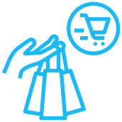
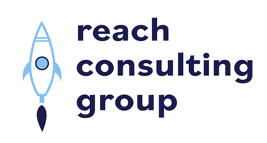

WHEN
January 2022 – PRESENT
WHERE
University of Michigan - School of Information (Ann Arbor, MI)
WHAT (Instructional Aide - SI 106: Programs, Information, and People)
- Assisted professor to help 30 students learn the fundamental elements of Python (programming language) and how to access data on the internet
- Assisted 30 students in understanding how humans and technology complement each other, including techniques used to coordinate individuals working together on software development
- Graded select homework problems for 200 students weekly

WHEN
May 2021 – August 2021
WHERE
Birmingham Life Magazine (Birmingham, MI)
WHAT (Social Media/Digital Intern)
- Improved magazine’s social media presence, created social schedules, ran and posted daily on all social media accounts
- Engaged with magazine recipients/followers/clients, increased media following by close to 1,000 followers
- Worked on back-end tasks through the City Lifestyle publication platform, such as assisting advertising clients with establishing digital

WHEN
June 2021 – August 2021
WHERE
Hersh's, Inc. (West Bloomfield, MI)
WHAT (Retail Sales Associate)
- Tracked, marked, and stocked new inventory daily
- Worked with clients to assist them in purchasing new items
- Assisted in enhancing brand media presence to increase overall

WHEN
April 2021 – PRESENT
WHERE
Alpha Theta Delta - Michigan Chapter (Ann Arbor, MI)
WHAT (VP Outreach, VP Membership)
- Founded ATD, Michigan’s premier multi-disciplinary professional design-oriented organization
- As VP Outreach, networked and partnered with organizations and planned fundraisers to support communities and local businesses (PRESENT)
- As VP Membership (2021), created and led a unique recruitment process, planned all events and logistics, created unique processes for new members, planned new member events and logistics (2021)

WHEN
February 2021 – PRESENT
WHERE
Reach Consulting Group (Ann Arbor, MI)
WHAT (VP Marketing, Project Manager)
- As VP Marketing, created, published, and mangaged content on social media platforms daily, updated website monthly, designed multiple pieces of group merchandise
- As Project Manager, worked with and managed group members to assist clients in reaching goals
- Conducted user visibility tests, created and executed marketing strategies, and evaluated websites/media platforms specific to the client, specializing in User Experience Design

WHEN
September 2020 – PRESENT
WHERE
Spoon University - Michigan Chapter (Ann Arbor, MI)
WHAT (Editorial Director, Social Media Team Member
- Created article pitches and wrote articles about a variety of food-related topics for Spoon University, an organization focused around media, food, lifestyle, and more
- As Editorial Director, oversaw Editorial members, including assisting with article pitches, editing article drafts, and conducting weekly meetings with other executive positions (2021)
- As Social Media member, produced content featured on Spoon University’s Michigan chapter Instagram, now having around 8,000 followers (2021)


OTHER SKILLS
- English (native language)
- Spanish (semi-proficient)
- Python (proficient)
- HTMl / CSS (learning)
- 13 years of experience playing the piano
- Fun fact: average typing speed is 110 wpm